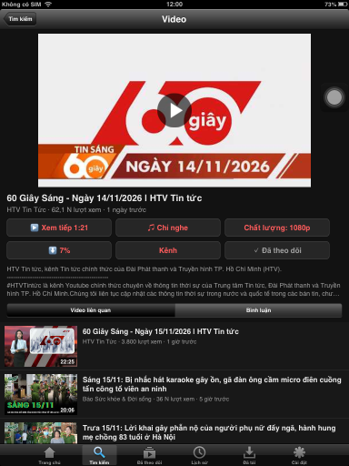
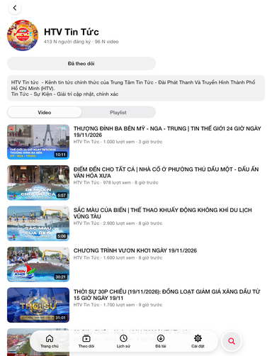

TubeMini
Xem YouTube trên iPad và iPhone đời cũ (iOS 5 – 8).
Thêm nguồn vào Cydia Tải về Đăng ký dùng Mã nguồn Nhóm Telegram Phiên bản 1.2.0 · Mã nguồn mở GPL-3.0 · Không liên quan tới YouTube hay GoogleXem YouTube trên iPad và iPhone đời cũ (iOS 5 – 8).
Thêm nguồn vào Cydia Tải về Đăng ký dùng Mã nguồn Nhóm Telegram Phiên bản 1.2.0 · Mã nguồn mở GPL-3.0 · Không liên quan tới YouTube hay GoogleApp YouTube gốc trên iOS 5 – 8 đã ngừng chạy từ lâu, và trình duyệt cũ không mở nổi trang YouTube bây giờ. TubeMini là app YouTube viết riêng cho iPad và iPhone đời cũ:
youtu.be (cả "Bắt đầu tại" một giây nào đó), gửi qua Tin nhắn, Mail; chia sẻ cả kênh, playlistss://, cả SS 2022 của 3X-UI) Trang chủ
Trang chủ
Trang video
Trang kênh Tìm kiếm
Tìm kiếm Tải về xem offline
Tải về xem offline Giao diện tối
Giao diện tốiiPad / iPhoneapp TubeMini |
||
1 danh sách, link phát dữ liệu nhỏ |
3 hình, tiếng, ảnh, video tải về |
|
Máy chủ TubeMini |
2 |
YouTube / Googlevideo và ảnh |
Cài đặt → Mạng của app (TLS mới, DNS mã hoá, vượt chặn, proxy) áp dụng cho cả đường 1 và đường 3. Không cần tài khoản Google.
Nhắn bot Telegram @tube_mini_bot, bấm 📝 Đăng ký. Bot gửi địa chỉ máy chủ riêng cho thiết bị của bạn, dạng https://…/u/<mã>.
Tin chứa địa chỉ tự xoá sau một lúc, hãy chép ngay. Mất địa chỉ thì vào bot, bấm 👤 Tài khoản của tôi → Cấp lại mã. Mỗi người tối đa 2 thiết bị; thiết bị thứ hai cần admin duyệt (➕ Thiết bị mới). Mỗi địa chỉ chỉ dùng cho một thiết bị, đừng chia sẻ.
iPad iOS 5 / 6 không chạy được app Telegram chính thức: quét mã QR bằng camera điện thoại, hoặc tìm @tube_mini_bot trong Telegram trên điện thoại / máy tính. Có GramMini (Telegram cho iOS 5 / 6) trên máy thì vào TubeMini → Cài đặt, chạm vào thẻ bot là mở chat với bot.
Mở bot trong TelegramCần iPad (hoặc iPhone) iOS 5, 6, 7 hoặc 8 đã jailbreak.
Trên iPad mở trang này bằng Safari, bấm Thêm nguồn vào Cydia. Hoặc vào Cydia → Nguồn → Sửa → Thêm, rồi nhập:
https://tubemini.github.io/cydia/Tìm TubeMini rồi cài. Các bản sau app tự báo khi có bản mới; bấm Cập nhật, app tự cài rồi khởi động lại màn hình chính.
Muốn xem video nổi trên màn hình chính và app khác (iOS 6 – 8): cài thêm gói TubeMini - Hình nổi trong cùng nguồn, rồi trong trình phát bấm ⋯ → Hình nổi.
Tải vn.tubemini.io_1.2.0_iphoneos-arm.deb ở trang Releases, chép sang iPad hoặc iPhone rồi chạy dpkg -i (qua SSH, iFile hoặc Filza).
Mở TubeMini → Cài đặt → Máy chủ → gõ địa chỉ bot gửi, rồi bấm Kiểm tra kết nối. Không cần gõ https://; chữ hoa hay thường đều được.
Bot gửi địa chỉ tới GramMini ngay trên máy đó: bấm nút 📲 Mở trong TubeMini dưới tin, TubeMini mở lại và hỏi có dùng địa chỉ này không; bấm Kết nối là xong (cần TubeMini 1.0.1).

Hỏi cách cài, báo lỗi, góp ý tính năng và nhận tin khi có bản mới: nhóm t.me/tivikit (@tivikit).
iPad iOS 5 / 6 không mở được Telegram (máy chủ Telegram cần kết nối bảo mật mới hơn). Hãy quét mã QR bằng camera điện thoại, hoặc mở Telegram trên điện thoại / máy tính rồi tìm @tivikit.
Mở trong TelegramĐược, ở bất cứ đâu trong Việt Nam, qua Wi-Fi hay 4G. Ở nước ngoài, hoặc khi bật VPN đặt ở nước ngoài, thì không dùng được.
Không. Kênh theo dõi và lịch sử lưu riêng cho từng người.
iPad và iPhone iOS 5 – 8 đã jailbreak. Đã thử trên iPad 1 (iOS 5.1.1), iPhone 5 (iOS 6.1.4, dùng hết màn 4 inch) và iPad mini 1 (iOS 8.4.1).